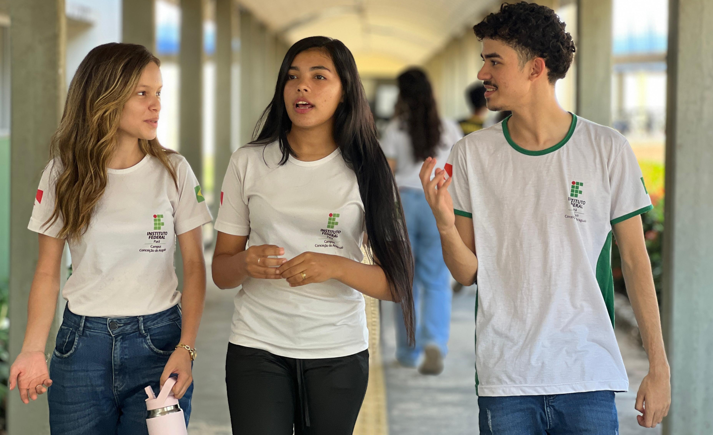
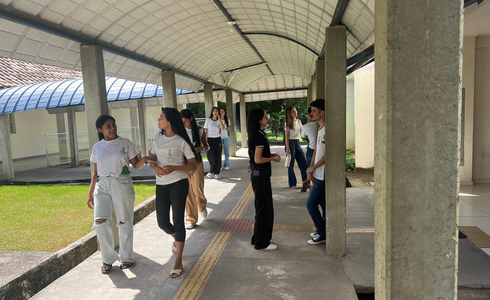
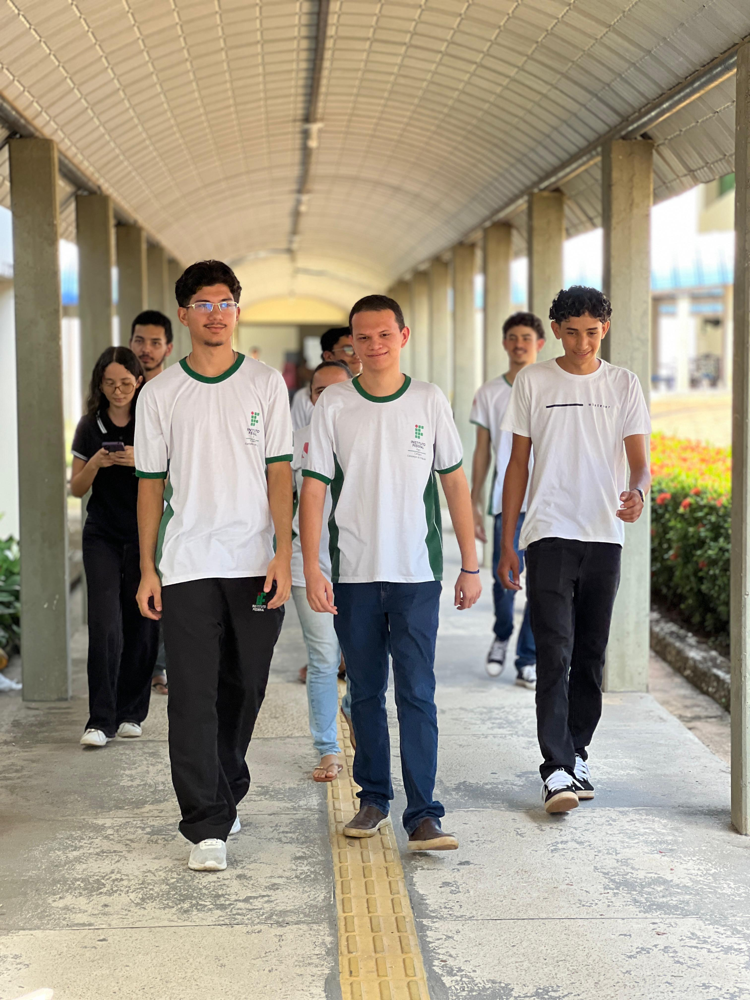

CORREDORES DO CAMPUS
Campus corridors
Os corredores também são lugares de passeios e encontros que unem laços de amizade. São espaços que ganham vida quando os alunos passam por eles.
Corridors are also places for walks and meetings that create bonds of friendship. They are spaces that come to life when students pass through them.


